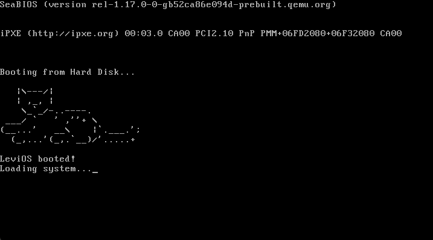
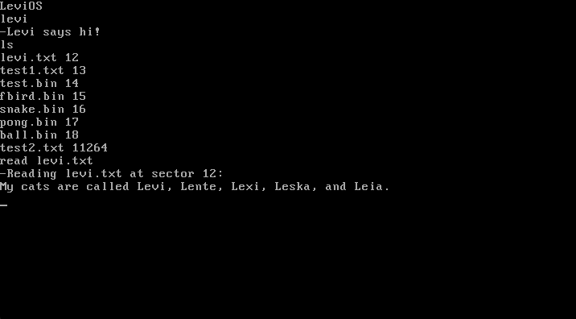
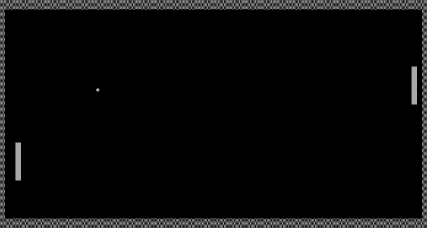

LeviOS is my operating system built completely from scratch in x86 NASM assembly, running in 16-bit real mode capable of booting from any standard drive. The bootloader lives in the very first 512-byte sector of the disk, gets loaded by the BIOS, and hands off control to a custom kernel — no existing OS, bootloader, or library code involved anywhere in the stack.

Disk access is handled through classic CHS (cylinder-head-sector) addressing via BIOS interrupts. LeviOS implements its own file system on top of raw disk sectors: a two-sector file table holds up to 64 file entries, each one mapping a filename to the sector where its data lives. Every file is capped at a single 512-byte sector, keeping the whole design simple and predictable. Each 16-byte file table entry follows a simple layout: the first 12 bytes store the filename, the next 2 bytes store the sector number where the file's data lives, and the final two bytes are unused padding. The built-in shell supports creating, reading, writing, and deleting files aswell as listing the file table, and a handful of quality-of-life features like backspace-aware input editing and screen clearing.

Beyond the shell and file system, LeviOS can load and execute standalone 512-byte machine
code programs via its run command — turning it from a simple shell into a real
platform other programs can run on. I wrote two of these myself, pong.bin and
ball.bin, a two-player Pong game and a simpler bouncing-ball demo (uses pong's code but without paddles), both built
entirely from scratch with x86 assembly inside the 512-byte-per-program limit. I also ported over a
couple of existing public bootsector programs — a Snake implementation and a Flappy Bird
clone — as fun demonstrations of just how much can fit in half a kilobyte of raw machine code;
those two were not written by me, but run happily on LeviOS's execution model all the same.
You can try LeviOS directly in your browser on the demo page — no downloads or setup required. You can also find details there on building and running it natively.